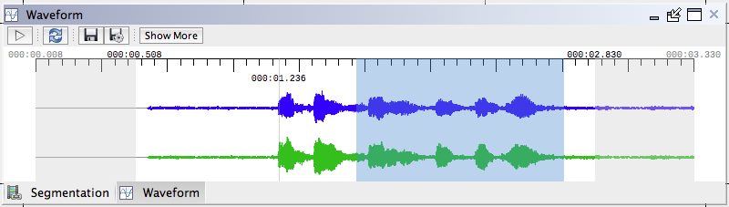

Speech Analysis
The Speech Analysis view displays the waveform, spectrogram, and TextGrid for the session.

Waveform Tier
Waveform Actions
Adjust Segment Start and End Times
Adjust segment start and end times to refine segments.
-
Click the Play button (CMD/CTRL+Shift+R).
This action will replay the segment for the displayed record. -
Select a portion of the waveform for your revised segment and press Enter. Alternately, typeover the existing time values in the Record Data view with revised values and click the Refresh button in the top left area of the Speech Analysis view.This action will adjust your segment start and end times.
Note: To view a larger portion of the waveform, click Show More. This extends the displayed interval by one second on each side. To redisplay the 500ms buffer, click Refresh. -
If you would like to listen to or further revise the segments, repeat steps 1 and 2.
Spectrogram Tier
The Spectrogram tier for Phon allows for visualization of the segment spectrogram, formants, pitch, and intensity from within Phon's Session Editor window. To display the Spectrogram view choose Show Spectrogram from the Praat menu in the Speech Analysis view. Options for toggling the display of formant, pitch and intensity data can also be found in the Praat menu.
Spectrogram Actions
List Formants
List formant values from the Speech Analysis view.
A listing of formants can be obtained from the Speech Analysis view. To print a formant listing use the following procedure.
-
(Optional) Make a selection in the Speech Analysis view.
-
From the Praat menu in the Speech Analysis view, select .
-
Note: Options for formant listings can be changed through the Formant settings window.
The list of formants will be displayed in a new Buffers window for the audio segment/selection.
List Intensity
List intensity values from the Speech Analysis view.
A listing of intensity values can be obtained from the Speech Analysis view. To print intensity values use the following procedure.
-
(Optional) Make a selection in the Speech Analysis view.
-
From the Praat menu in the Speech Analysis view, select .
-
Note: Options for intensity listings can be changed through the Intensity settings window.
The list of formants will be displayed in a new Buffers window for the audio segment/selection.
List Pitch
List pitch values from the Speech Analysis view.
A pitch listing can be obtained from the Speech Analysis view. To print a pitch listing use the following procedure.
-
(Optional) Make a selection in the Speech Analysis view.
-
From the Praat menu in the Speech Analysis view, select .
-
Note: Options for pitch listings can be changed through the Pitch settings window.
The list of pitch values will be displayed in a new Buffers window for the audio segment/selection.
TextGrid Tier
The TextGrid viewer in Phon displays basic TextGrid information about the TextGrid assigned to the current session.
To display the TextGrid view, choose Show TextGrid from the Praat menu in the Speech Analysis view. You can select audio segments by clicking intevals in the displayed TextGrid.
TextGrid Actions
Generate TextGrids
Generate TextGrids from Phon records.
The following procedure outlines how to generated new TextGrids from Phon record data.
-
Note: You may also open the Generate TextGrids wizard from the Session Editor window, in which case skip step 2.
From the Project Manager window choose from the window menu.
-
In the wizard window, select a single session for which TextGrids will be generated. Click Next.
-
Choose the records that will be processed. Click Next.
-
Select the location for generated TextGrid files. You can generated TextGrid data in the default project location (this is where Phon will look for TextGrid data for records) or into an external folder. In the same screen, choose which Phon tiers will be exported in the TextGrid. When done, click Generate TextGrids.
Import TextGrids
Import TextGrids as Phon records.
TextGrids created with Praat may be imported as Phon records. Data from tiers in selected TextGrids will be mapped to Phon tier data.
-
Open the Import TextGrids wizard by using the menu command from the Project Manager window.
-
In the first step of the wizard, select a folder containing the TextGrids you wish to import using the browse button on the right-hand side of the text field. When you select the folder, a list of detected tier names from the TextGrids will be displayed in the table.
-
For each TextGrid tier you wish to import, type the name of the Phon tier in the column titled PhonTier. You may assign more than one TextGrid tier to the same Phon tier. You may also assign a group marker for each imported tier. When a TextGrid interval with this marker as it's text is encountered a new group is created in the Phon record. By default, this is set to '#' as this is how Phon will generate TextGrid files. Click next.
-
Choose which session in the project to which you wish to add the imported records or specifiy a new session name to be created. Click next.
-
The TextGrids will now be imported. If any errors are encountered they will be displayed in the text area shown in the wizard.
Open TextGrid in Praat
Open a TextGrid managed by Phon in the Praat application.
The TextGrid view in Phon does not provide editing support for TextGrids. To open TextGrids from Phon in Praat use the following procedure.
-
Note: You will need Praat version 5.3.85 or later. Praat must also be open.
From the Speech Analysis view in the Session Editor window, choose from the Praat menu. The TextGrid in Phon will fade and a button to unlock the TextGrid will be displayed.
-
Note: Phon uses TextGrid tier naming to map values onto Phon tiers. Do not change the names or delete any of the tiers generated by Phon.
In Praat, edit TextGrid intervals as you see fit. You may also add new tiers to the TextGrid.
-
When finished editing the TextGrid, you can send the data back to Phon by choosing . The TextGrid in Phon will unlock and its contents updated.